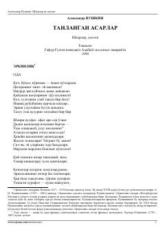

SVAleksandr Pushkinning o'zbek tiliga tarjima qilingan sara she'rlari va dostonlari to'plami.
Ushbu kitob buyuk rus shoiri Aleksandr Pushkinning o'zbek tiliga tarjima qilingan tanlangan she'rlari va dostonlarini o'z ichiga oladi. To'plamda muallifning o'tkir lirikasi, ozodlik ruhidagi asarlari hamda mashhur dostonlaridan parchalar joy olgan.